Practice Tools
Six tools open from the icon row at the right of the top bar. Each is a floating panel over the fretboard — drag it where you want it, and close it when you are done. When panels overlap, pressing one brings it to the front, and the arrangement is kept between launches. The neck stays visible and usable underneath.
Everything on this page works on Mac and iPad. The amp and the looper used to be Mac-only; they now run on iPad too. Plug in a USB-C audio interface, or use headphones — monitoring through the built-in speaker feeds back into the built-in mic, and the amp will tell you so.
Four of these tools are part of Fretling Pro — the drum sequencer, the amp, the looper, and Live Detect — along with the tuner's Precision mode and its Trace, Strobe and Disc indicators. Anything marked Pro below needs that one-time unlock; the rest of the page is free. What Pro adds has the full list.
Every panel is built to look like the hardware it stands in for — a machined faceplate, recessed displays, indicator lamps, knurled fader caps. Two finishes ship: Machined, a light panel, and Studio, a graphite one. Settings › Fretboard › Appearance › Modules picks between them, and the default follows your theme — light panels on the light canvas, graphite on the dark one.
Tuner
A chromatic tuner that listens through your microphone or audio interface. It names the note you are playing and shows how far off you are in cents.
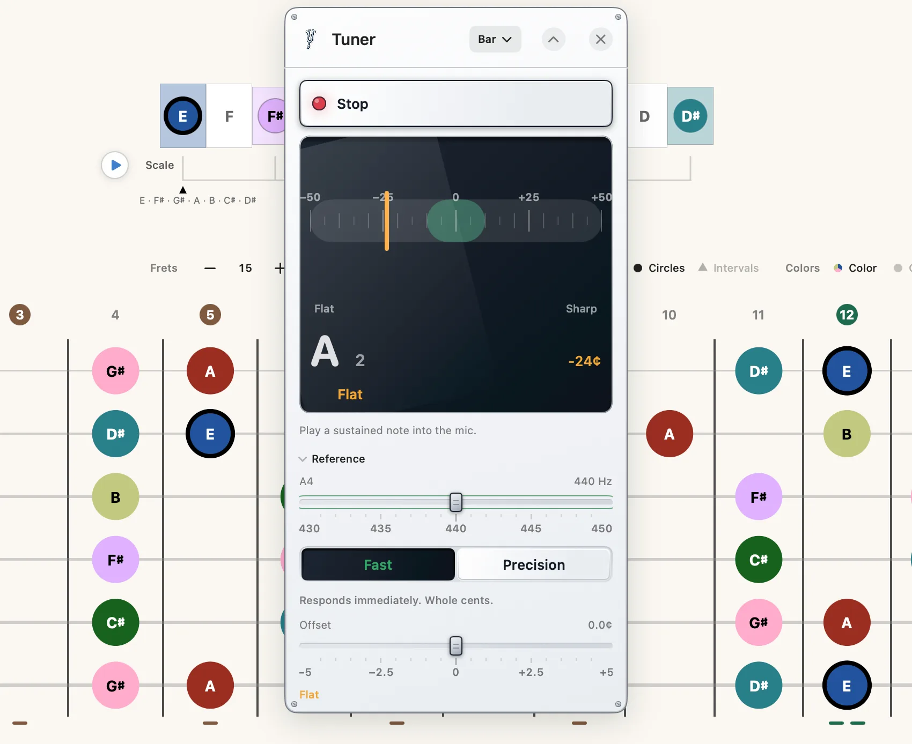
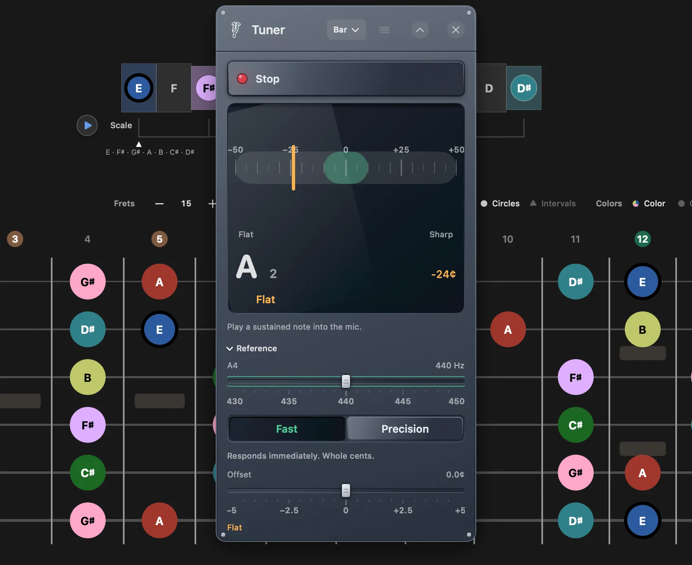
Indicator styles
Five ways of drawing the same measurement — pick whichever you read fastest:
- Needle — a classic swinging needle.
- Bar — a horizontal deviation bar against a cents scale.
- Trace Pro — plots pitch over time, so drift and vibrato are visible.
- Strobe Pro — a strobe band that stands still when you are in tune.
- Disc Pro — a rotating disc, seen through a half-moon window, that stops turning at true pitch.
Fast or Precision
These are two different instruments, not a quality slider:
| Mode | Reads | In tune within | Use it when |
|---|---|---|---|
| Fast | Responds immediately, whole cents | ±5 cents | Retuning a string mid-song, checking quickly between takes. |
| Precision Pro | Hold a note about a second, tenths of a cent | ±0.5 cents | Setting the guitar up properly with it on the bench. |
Precision measures phase over a settled baseline, which is why it needs a held note — a sub-cent reading is only as good as the stretch of signal it was fitted over.
Metronome
| Control | Range / options | Notes |
|---|---|---|
| Tempo | 40–250 BPM, default 120 | Steppers move one BPM at a time; hold to run. |
| TAP | — | Tap in time and the tempo follows your taps. |
| Meter | 4/4, 3/4, 2/4, 6/8, 5/4, 7/8, 9/8, 12/8, 1/4 | The beat indicator shows your place in the bar. |
| Subdivision | Quarter, Eighth, Triplet, Dotted Eighth, Sixteenth | Subdivides the beat without changing the tempo. |
| Sound | Classic, Woodblock, Click, Drums | Drums plays a real kit pattern instead of a click — see below. |
| Accent | On / off | Emphasizes the downbeat of each bar. |
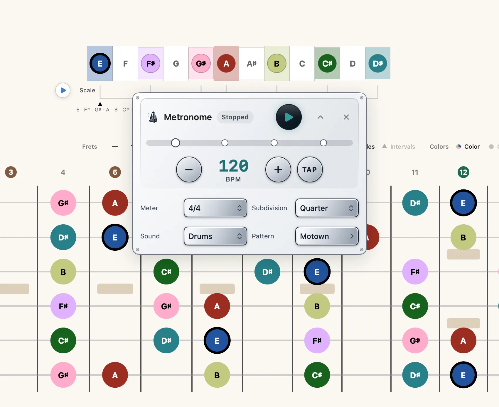
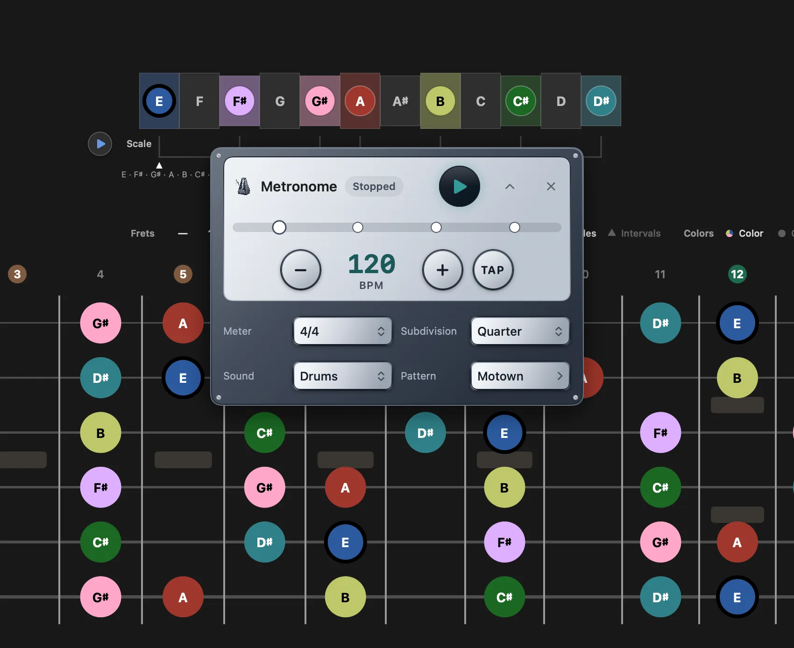
Drum sequencer Pro
With the Drums sound pack selected, the metronome plays a step-sequenced pattern across three lanes — Kick, Snare, and Hat — instead of a bare click. Every meter ships with a musical default rather than a mechanical one, so 6/8 feels like 6/8 without you editing anything.
Open the pattern editor from the metronome to build your own:
- The grid — one row per lane, one column per step. Tap a cell to switch that hit on or off; the grid scrolls sideways when a meter needs more steps than fit.
- Play while you edit — the pattern loops as you work, so you hear each change immediately.
- Library — save a pattern under a name, mark one as active, duplicate one as a starting point, rename, or delete. Edited-but-unsaved patterns are badged Edited, and closing with unsaved work asks before discarding it.
- Reset — restores the default kick, snare and hat steps for the current meter.
Changing the meter while a custom pattern is loaded asks what you want done with it rather than silently reshaping your work.
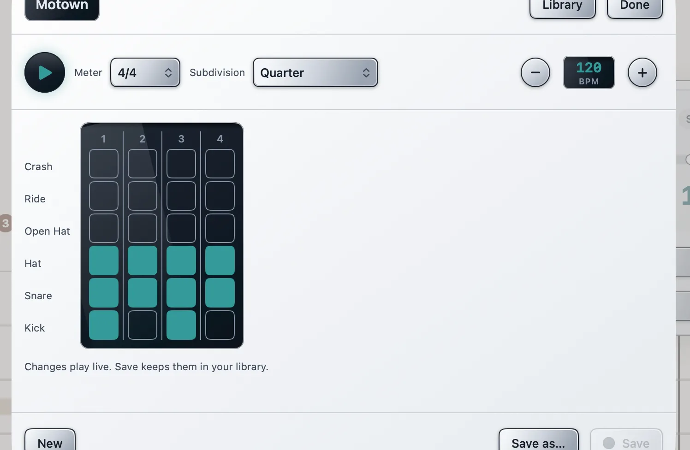
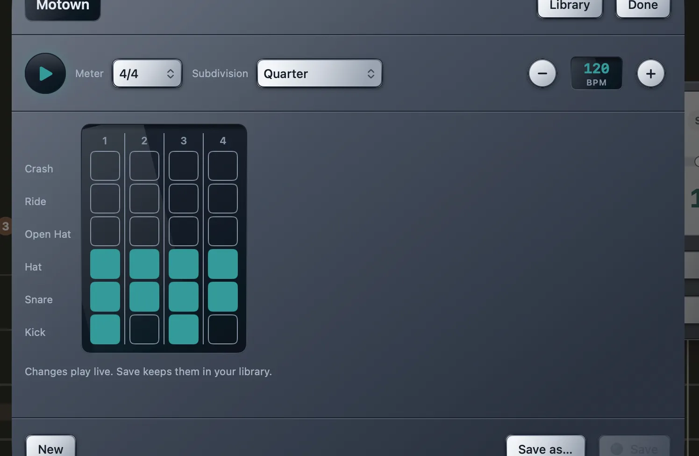
Guitar amp Pro
Plug a guitar into an audio interface and monitor it through a Neural Amp Modeler profile — the amp captures shared as .nam files. Fretling ships with a set of starter models and loads any other .nam file you point it at.
The panel holds amp matters only. Anything about the input — which interface, which channel, how much gain, buffer size and sample rate — lives in the input console in the top bar, because the tuner and Live Detect listen through the same input and none of it needs a model loaded.
- Model — pick a starter profile, or Load .nam… to use your own.
- Monitor / Stop — starts and stops live monitoring. Stopping genuinely releases the microphone; a loop that is playing keeps playing.
- Output gain — level out of the amp path.
- Model input level and Model output level — trim around the model itself, which is how you match a profile that was captured hot or quiet.
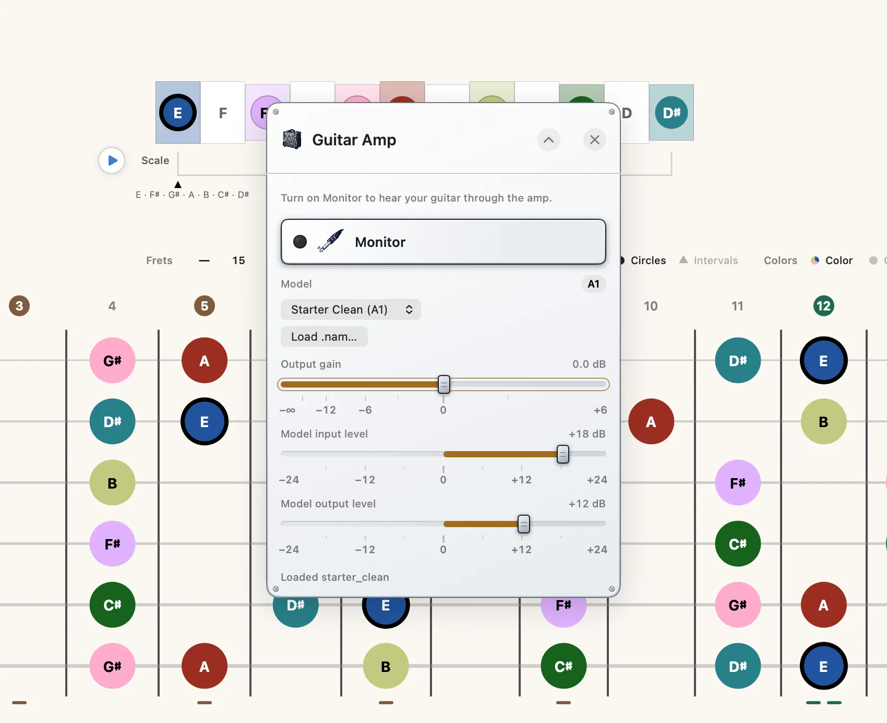
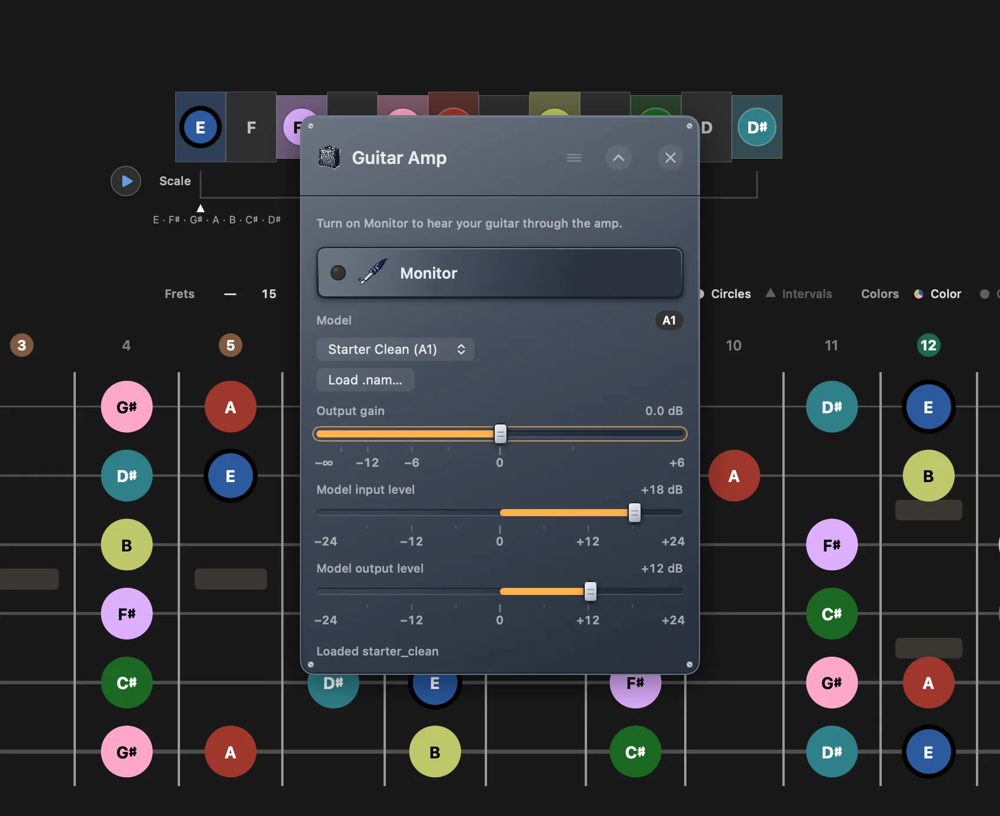
Input
Choosing an interface is not an amp question, so it does not live in the amp. The top bar carries a microphone lamp and a level meter: the lamp is the master switch, and the meter shows what is arriving before you open any tool at all. Press the meter to open the console, which is where every input setting lives — for the amp, the tuner and Live Detect alike.
The lamp lights whenever the microphone is genuinely open somewhere — whether you opened it yourself or the tuner, Live Detect or the amp's Monitor did. Pressing a lit lamp is always the release: it lets go everywhere at once, and every tool listening through it stops. A loop that is already playing keeps playing. On both platforms the same switch sits in the Input menu as Turn Microphone On / Off, on ⌘⇧M.
If the system refuses the microphone, the lamp shows a struck-through mic with a red rim and the console opens by itself with the reason named and Open Sound settings — Open Settings on iPad — in reach.
The console opens on Level, which is what you need mid-session, and keeps routing and timing behind Setup.
- Microphone — the same master switch as the lamp. Under it a status line says what is happening, and when something else is holding the input it names what: In use by Amp · Tuner · Live Detect, so turning it off is never a surprise.
- Input gain — applied before anything listens, so the amp, the tuner and Live Detect all hear the same level.
Under Setup:
- Input device — the interface your guitar is on. On Mac an audio device; on iPad one of the inputs iPadOS offers. Either way, if a saved one is gone the picker says so rather than failing silently.
- Channel — which of that interface's inputs your guitar is plugged into. It appears whenever the input has more than one, and says so plainly when there is nothing yet to choose between.
- Route (iPad) — what the input and output actually resolved to. iPadOS still picks the output for you: plug in headphones or an interface and it switches automatically. The console warns here when the route would feed back.
- Buffer size and Sample rate — the latency trade. Fretling supports 44.1, 48, 88.2, 96 and 192 kHz. On iPad these are requests rather than settings: iPadOS answers them when the input starts, so a line under the pickers reports what it actually granted.
- Latency — the resulting monitoring latency, reported in milliseconds so the trade is a number rather than a guess.
Every slider has tick marks, a dB readout, and a double-click reset back to its default.
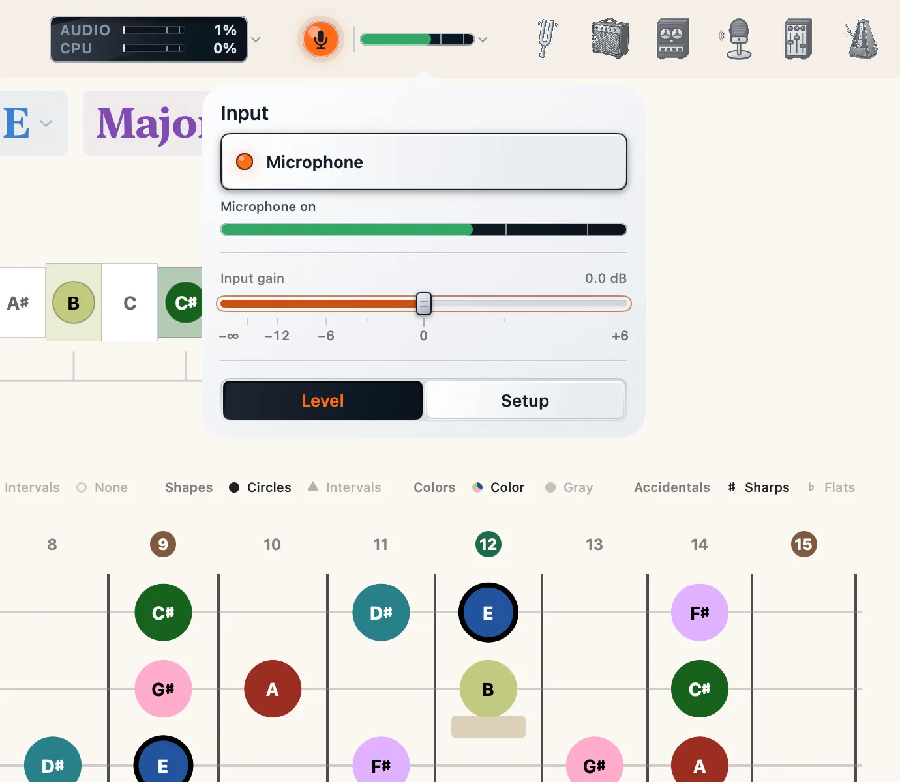
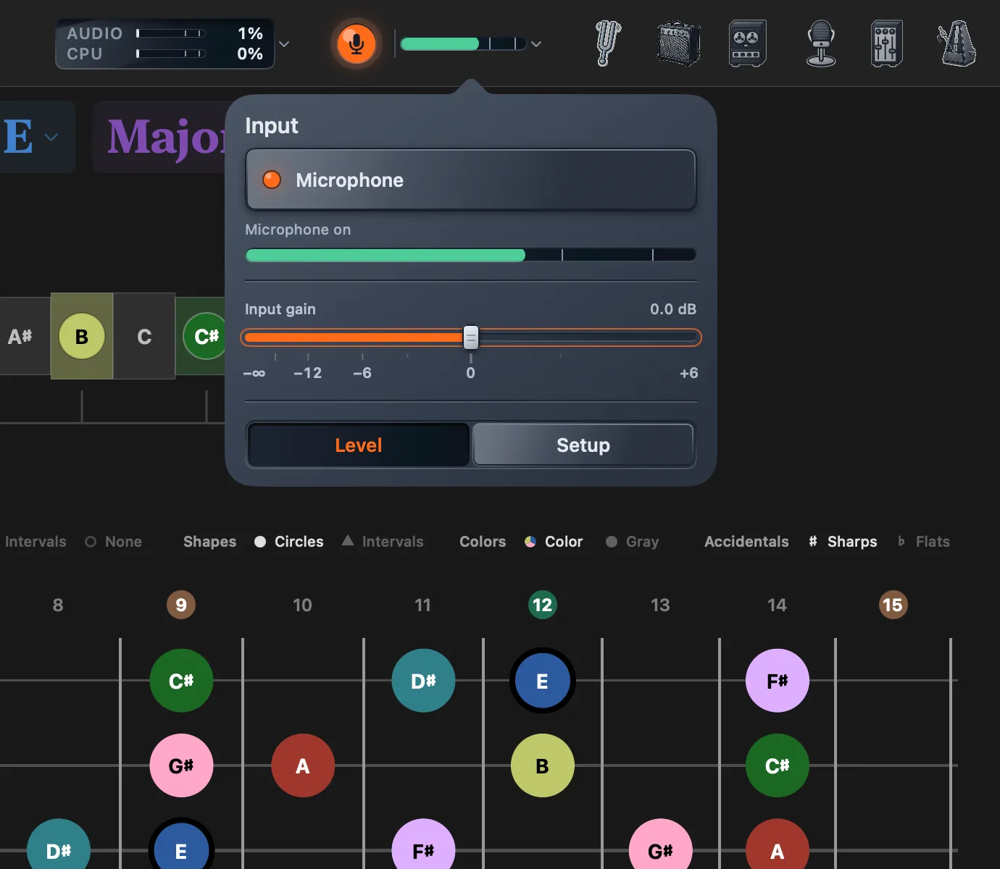
Looper Pro
Record a phrase and play over it. The looper sits on the amp's monitoring path, so turn Monitor on in the amp first — the looper says as much if you have not. Once a loop exists it keeps playing on its own: turning Monitor off releases the microphone but leaves the loop running, and Play brings it back even with the amp down.
- Record — press once to start, press again to close the loop. It then repeats until you clear it.
- Bars — set a length in bars and recording stops itself on the bar line, so the loop is in time without you catching it by hand.
- Count-in — a bar of clicks before recording starts.
- Click while recording — keeps the metronome audible through the take.
- Loop volume — how loud the loop plays back under you.
- Layer fade — how much earlier layers fade back as you stack new ones on top.
- Clear — throws the loop away.
A beat readout shows where in the loop you are. Changing the sample rate clears the loop — the recording no longer matches the engine — and the looper tells you when that has happened.
Loops live in memory for the session only. Nothing is written to disk, and quitting the app discards them.
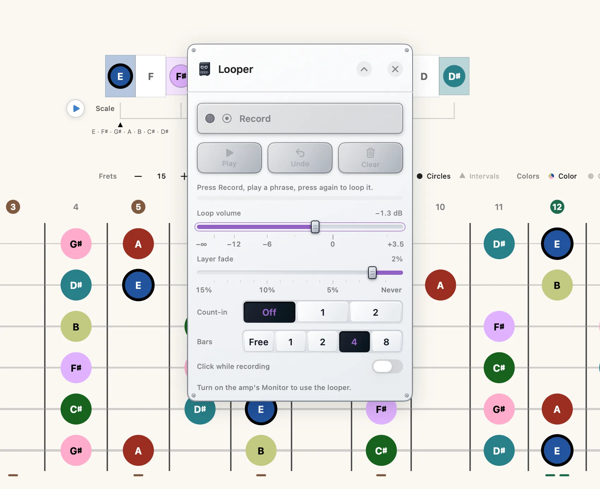
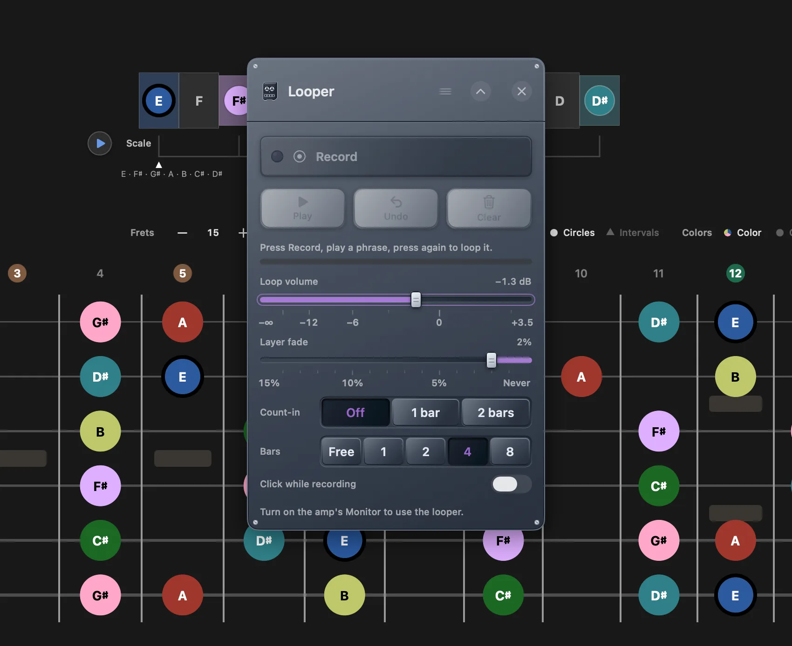
Mixer
One panel for every sound Fretling makes, so you can balance them instead of hunting for the level that is too loud.
| Strip | Controls |
|---|---|
| Notes | Notes you tap on the neck, and scale playback. |
| Chord | Chords played from the timeline and the Chord Atlas. |
| Prog | Progression playback. |
| Click | Metronome and drums. |
| Amp | Your monitored guitar. |
| Loop | Looper playback. |
| Main | Master output. |
Every strip except Main has mute and solo; a badge on the panel reminds you when something is muted or soloed, so a silent app is never a mystery. Levels persist between sessions.
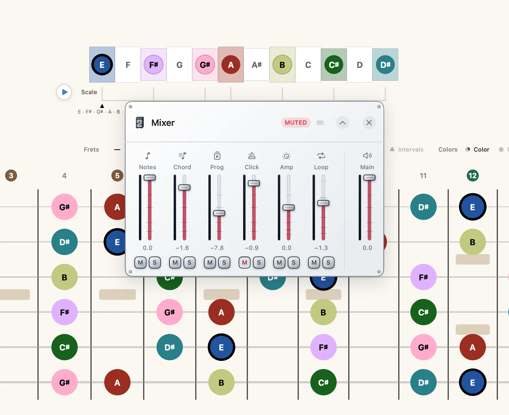
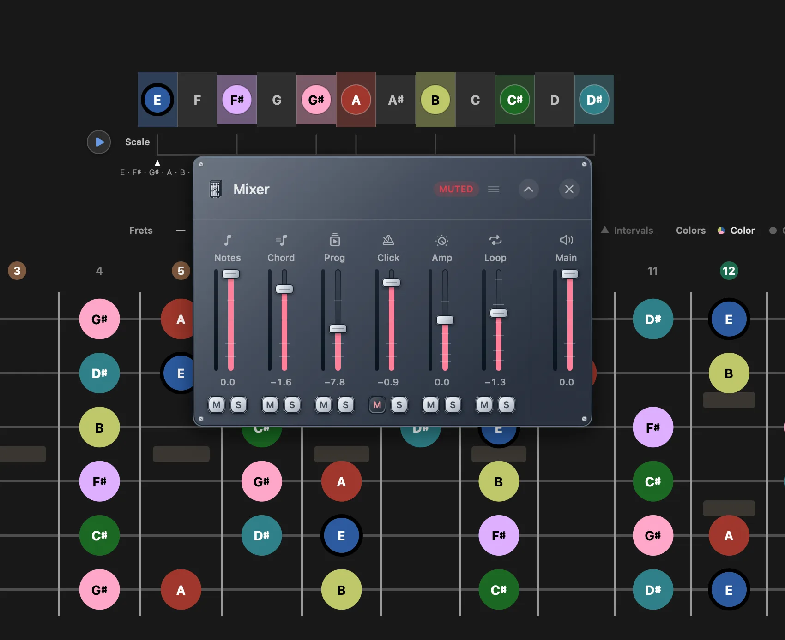
Live Detect Pro
Live Detect listens to what you play and marks it on the neck in real time, so you can check that what you are fingering is what you think it is.
In identify mode it gains a Send to fretboard button, which takes the notes it just heard and places them on the neck as an identification query — play a chord you cannot name, send it over, and read the ranked answers.
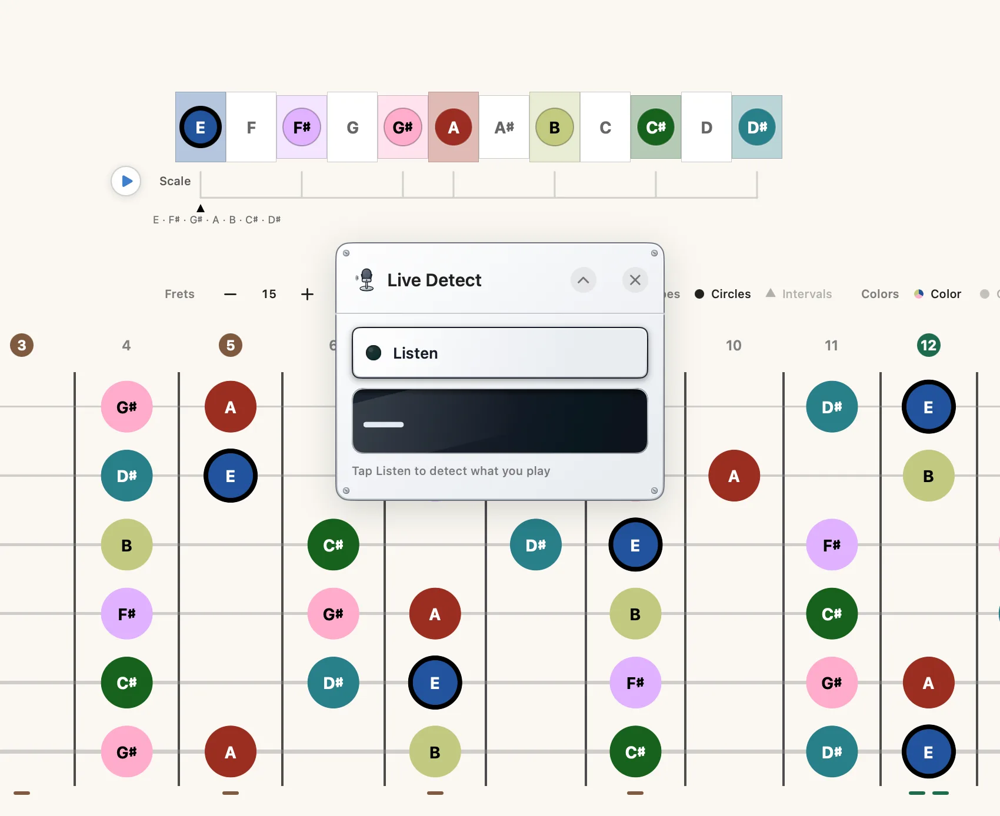
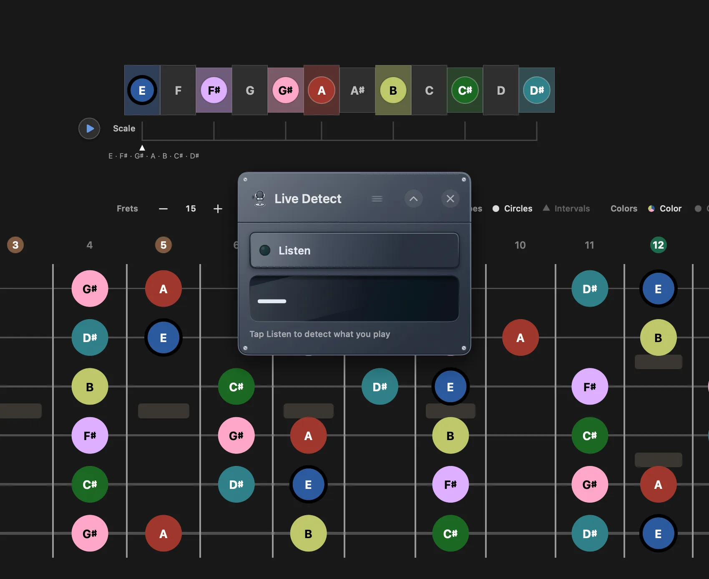
Microphone access
The tuner, Live Detect, and the amp all need audio input, so the first time you open one — or turn the microphone on from the top bar — your device asks permission. Audio is analyzed live and never recorded, stored, or transmitted. Capture stops when you close the tools, and turning the input off from the top bar releases the microphone everywhere at once. Full detail is in the privacy policy.